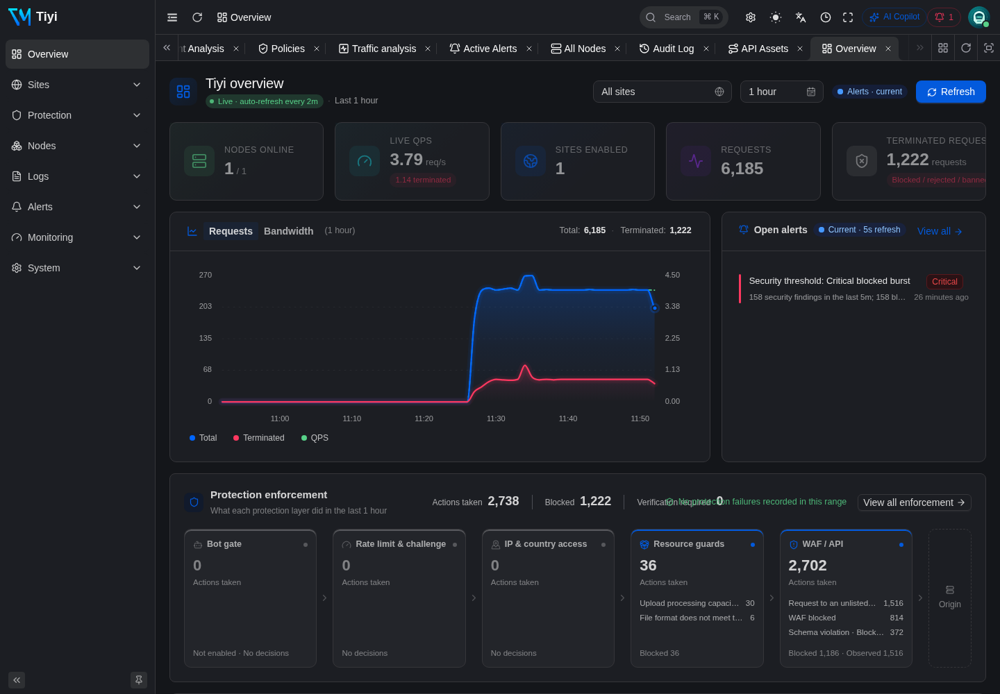
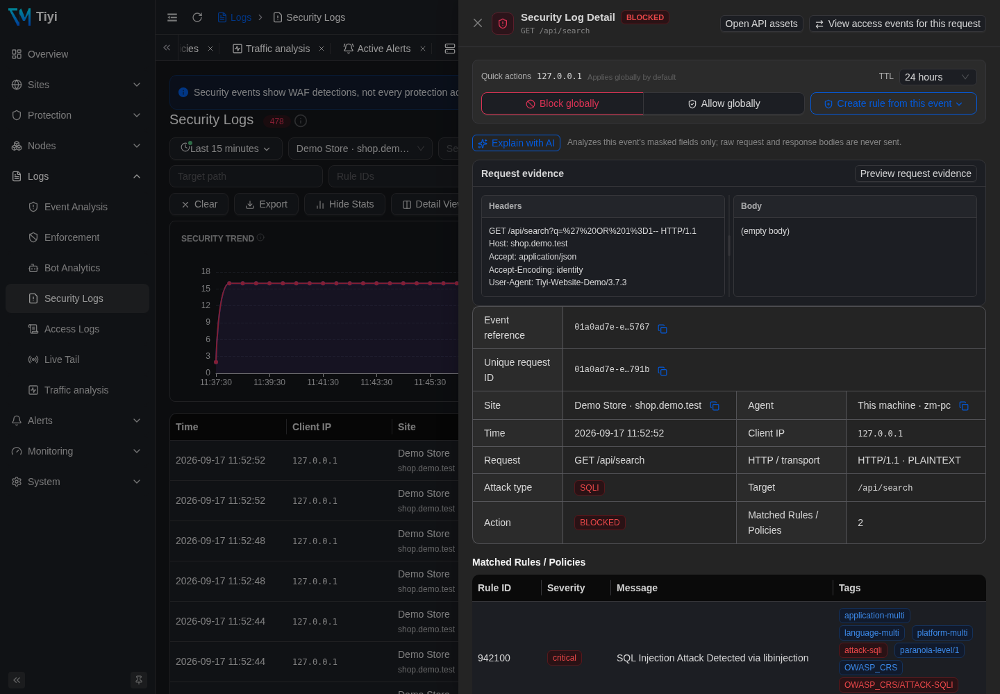
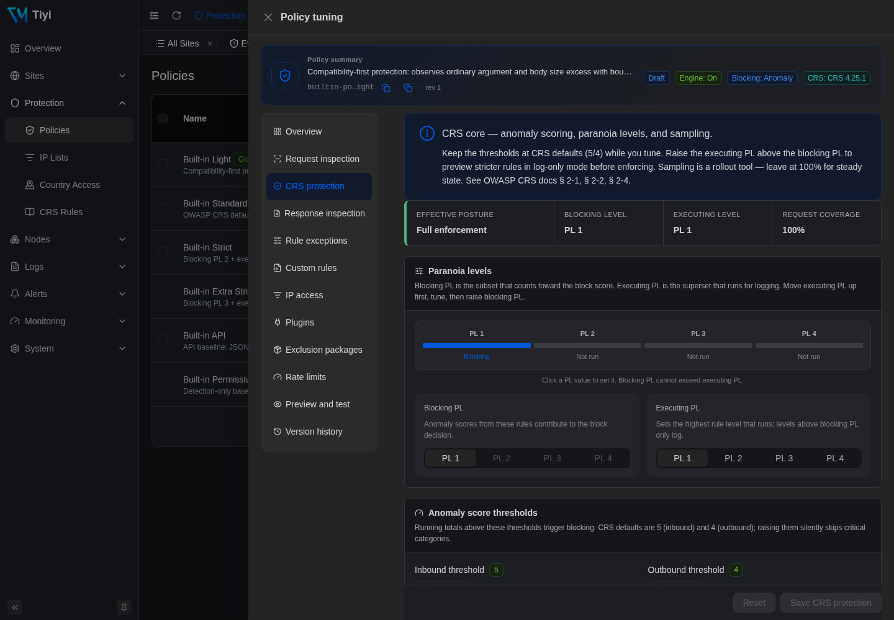
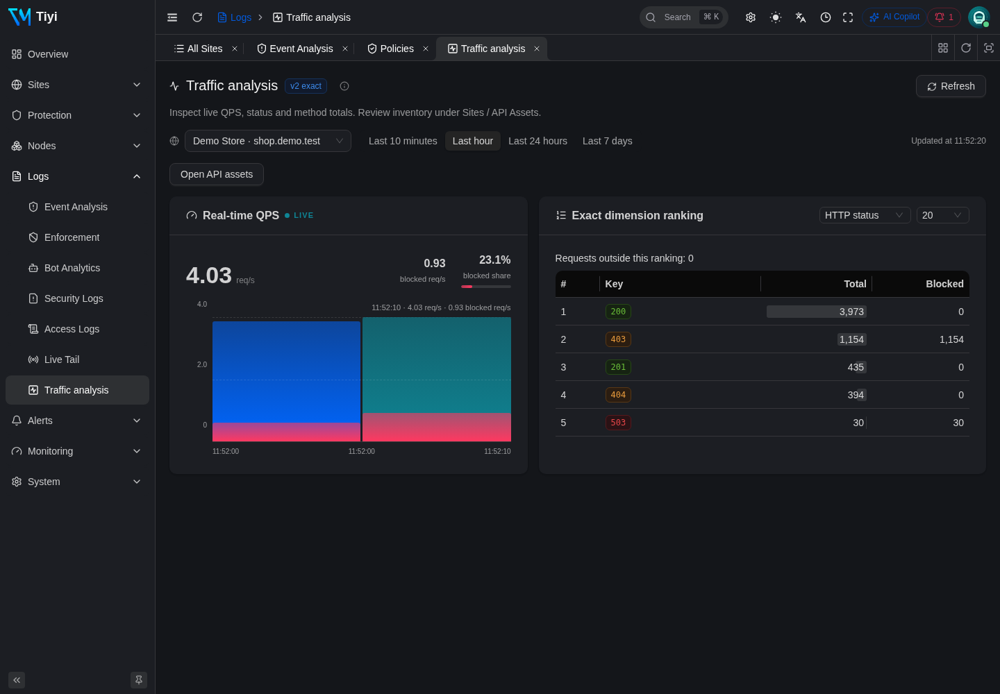
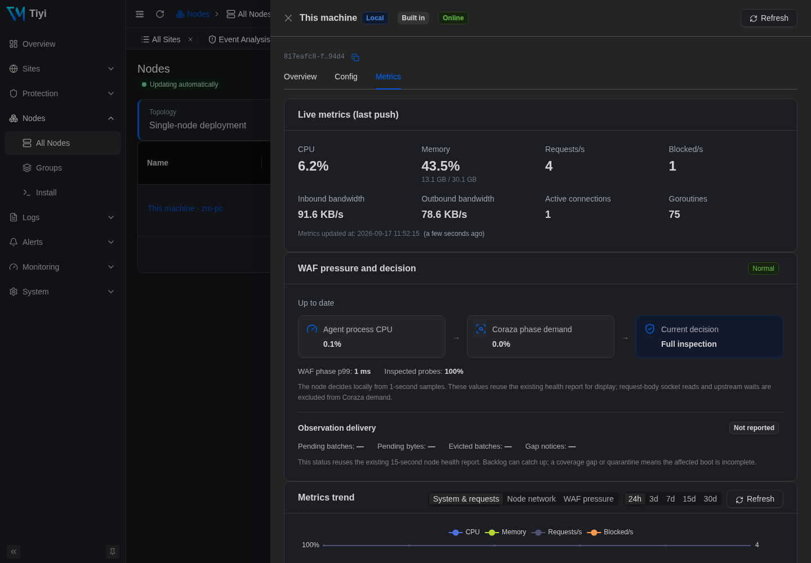
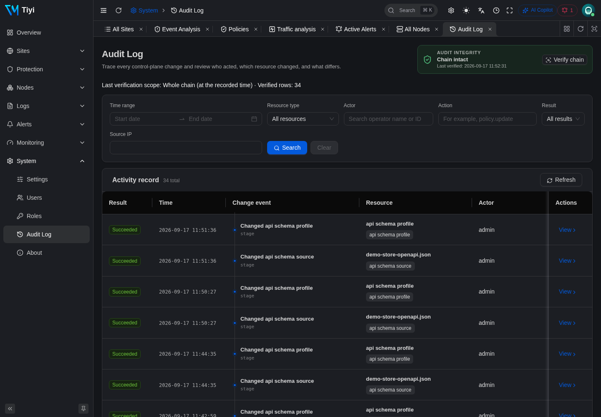

Tiyi is a production-grade WAF, reverse proxy, and management plane in a single Go executable. Caddy + Coraza + OWASP CRS 4 + SQLite, with the admin UI embedded. No Docker. No external database. No Redis. Five minutes from download to blocking real attacks.

Tiyi replaces a four-service compose file with a single Go process — and adds the things ops teams actually want: live config delivery, audit chain, telemetry, and a typed API that drives both the UI and the CLI.
Seven stable work areas organize runtime operations, delivery, protection, fleet, evidence, response, and governance. Responsive navigation, keyboard semantics, permission-aware groups, and consistent empty/diff/apply states keep complex workflows learnable.
Coraza compiles policies from a structured domain model into SecLang. Global, policy, and site-scoped IP controls; per-site overrides; paranoia levels; scoring thresholds; exclusion packages — without forking the ruleset.
HTTP-01, DNS-01 with multi-provider support (Cloudflare live; Route53/Aliyun stubs), wildcard certs, and uploaded enterprise certs. Renewal coordinated across all agents.
One host, one cert, many upstream pools by path prefix — API-gateway-style fan-out. Each route gets its own post-apply health probe; unmatched paths fall through to the site default or a strict 404. Every access-log row carries the route_id and upstream_id that served it, and path scope is canonicalized identically across the WAF, IP lists, and the rate limiter.
Same proto schema serves the Vben Admin UI, the tiyi CLI, and the agent stream. Every mutation has one path; the CLI and API stay in lockstep by definition.
Primary + warm secondary + N pure agents over a long-lived gRPC bidi stream. Live config push lands on every node in ~50 ms; agents keep proxying on last-known config indefinitely if the CP is unreachable.
Open-bucket telemetry pipeline with Top-K via Misra-Gries, sample rings, and a per-site URL prefix tree. Prometheus exporter on the local admin socket. No external time-series database required.
Every mutation — including IP-list bindings, rate-limit endpoints, and trust-profile changes — appends a signed audit row. Daily anchor commitments and an in-UI Verify chain button make tamper-evidence operational.
Best-effort TCP/UDP/unixgram forwarding for security, access, error, and audit events in RFC 5424, CEF, or LEEF. Bring your own Splunk, Elastic, Sentinel, or Wazuh.
One trust pipeline ends XFF parsing fragmentation. Auto-fetched CIDR snapshots for Cloudflare, Fastly, Akamai, CloudFront, Front Door, and GCLB; per-site overrides and an explain tool that traces every header.
Embedded OWASP CRS 4.25 ruleset, offline archive upload for CRS and exclusion packages, KEK-envelope encryption for secrets at rest, and a persistent ed25519 bundle-signing key the agent pins on first contact.
Rules debounce over a for duration, then drive a pending → firing → resolved lifecycle with a durable notification outbox, re-notify, grouping, inhibition, and silences. Webhook, Slack, PagerDuty, Feishu, WeCom — channel secrets KEK-encrypted at rest.
A security_incident layer folds same (site, client IP, attack class) events over a sliding window into one actionable incident — severity rolled up, lifecycle tracked, MITRE ATT&CK + kill-chain + geo tagged at creation, with optional default-off automated response.
An optional, default-off LLM layer beside the deterministic WAF — never in the request path. Explain any incident or log event, translate plain-English questions into log queries, and get policy-tuning or custom-rule drafts you approve by hand. Provider-agnostic (OpenAI-compatible, Azure, Ollama, vLLM); every prompt redacted, dual-RBAC gated, and rate-limited.
JWT with refresh, Argon2id local accounts, OIDC SSO on the same login surface, and 52 fine-grained permissions wired through every API and CLI command.
tiyi apply -f site.yaml previews the change set, shows a per-resource diff, and produces the same audit row a UI save would. Same validator, same mutator — by construction.
Every screenshot below was captured against a running Tiyi instance. Same data plane, same UI, same RPC.
QPS, total requests and blocks, attack distribution by tag, top attackers, and a live alert pane — all driven by the same telemetry pipeline that powers your Prometheus exporter.
Per-request rows enriched with the Coraza rule id, severity, message, and attack tags — extracted from the bracketed ModSecurity payload through a tolerant parser, not Coraza's typed accessor.

Built-in Strict / Standard / Permissive templates, each compiled to deterministic SecLang on save. Per-site overlays can add thresholds, paranoia, sampling, rule/custom tuning, IP-list bindings, and rate limits over the shared bundle.

Sharded ingress ring, 10-second open-bucket aggregator, daily SQLite partitions, Misra-Gries Top-K with an __other__ bucket so SUM(*) equals true traffic. Read it via a typed REST API, scrape it via Prometheus, or browse it here.

Every change writes SQLite, bumps a monotonic revision, and pushes a signed bundle down every open agent stream. Agents reconcile every 15 s as a safety net. Updates are idempotent by revision — replay and reorder are free.

Every mutation appends a hash-chained row attributed to the JWT subject. Daily anchor commitments and an in-UI Verify chain button make compliance practical, not theatrical.

Tiyi is proprietary software with Apache-2.0 upstreams. The same binary runs Community, Pro, and Enterprise; a signed license raises the remote-node budget. The control plane runs on your hardware.
For homelabs, side projects, and getting to know Tiyi.
Local standalone node. Full product feature set.
For teams running production on a handful of nodes.
Per Tiyi cluster. Annual billing available.
For regulated environments, air-gapped sites, and global edges.
Custom pricing tied to your fleet and SLA.
Need something specific? support@tiyisec.com · All plans use the same binary and include the full WAF feature set; the differences are licensed scale, support, and supply-chain services.
Every entry maps back to a commit and a verification command. The full release history lives at /changelog.
Dates are targets, not promises. Items move with verification, not optimism.
Tiyi is one binary. One config. One mental model. Five-minute install on the box you already have.